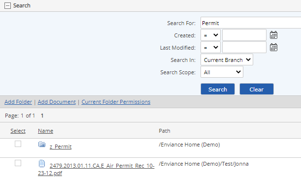

Use the document search function to find documents by selected criteria. You can:
The document content feature must be enabled for your system upon request to Cority Customer Service and may entail extra fees, depending on the storage space required. A case-sensitive search may also be requested.
To search documents by document properties:
In the Documents library, expand the Search section by clicking the plus sign (+).

Select the search criteria.
Search For: Enter a text string.
Created: Date document was created (add to documents library).
Last modified: Date document was last edited.
Search In: Choose to search Current Branch, Current Folder or All Folders
Search Scope: Name, Description or All.
Select Search.
The search results show all documents matching the criteria.
Results may be sorted by any column by clicking the column head (toggles ascending to descending).
You can save a document search as a Quick Link or a Saved Search, by clicking Save as New Quick Link or Save Search.